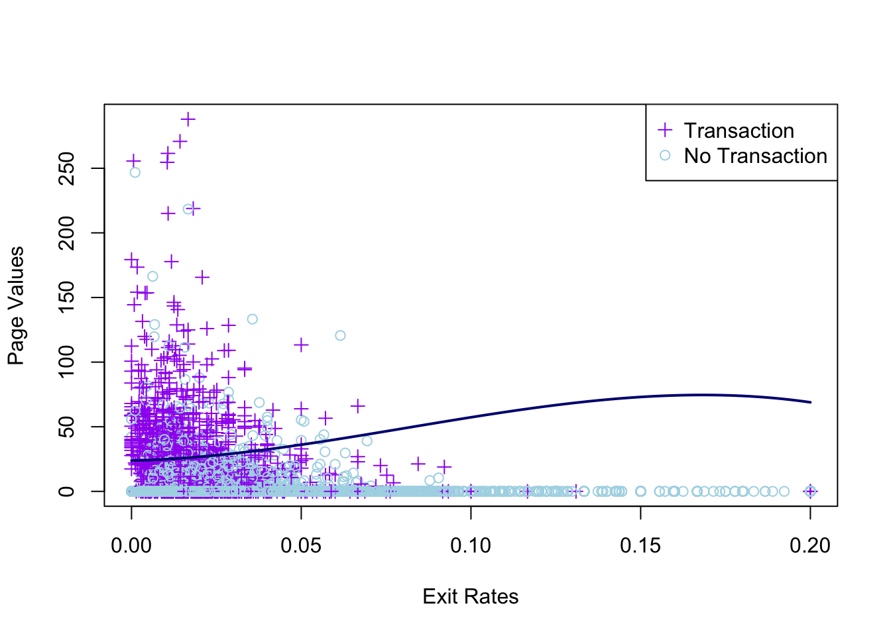

library(glmnet)library(tidyverse)set.seed(123)# Prepare your data explicitlyx <-model.matrix(Revenue ~ ., training)[, -1]y <-as.factor(training$Revenue)alphas <-c(0, 0.25, 0.5, 0.75, 1)cv_errors <-numeric(length(alphas))best_lambdas <-numeric(length(alphas))# Run CV for each alphafor (i inseq_along(alphas)) { cv_fit <-cv.glmnet(x, y, family ="binomial",alpha = alphas[i], nfolds =10,type.measure ="class")# Record best lambda and corresponding error best_lambdas[i] <- cv_fit$lambda.min cv_errors[i] <-min(cv_fit$cvm)}# Identify best alpha and lambdabest_alpha <- alphas[which.min(cv_errors)]best_lambda <- best_lambdas[which.min(cv_errors)]best_alpha
[1] 0.75
best_lambda
[1] 0.0003819203
plot(alphas, cv_errors, type ='b', lwd =2, pch =16, col ='cyan3',xlab =expression(alpha), ylab ='Cross-validation misclassification error',main ='CV Error vs Alpha (Elastic-Net Logistic Regression)')abline(v = best_alpha, lty =3, col ='firebrick')# Label the best alpha clearlytext(best_alpha, min(cv_errors), labels =paste("Best alpha =", best_alpha),pos =4, offset =0.8, col ='firebrick')
# Fit a simplified logistic regression with the best alpha and lambdasimple_x <-model.matrix(Revenue ~ ExitRates + PageValues, training)[, -1]simple_fit <-glmnet(simple_x, y, family ="binomial", alpha = best_alpha, lambda = best_lambda)# Extract coefficients explicitlycoefs <-coef(simple_fit)intercept <-as.numeric(coefs[1])beta_exit <-as.numeric(coefs[2])beta_page <-as.numeric(coefs[3])# Clear plot of decision boundaryggplot(training, aes(x = ExitRates, y = PageValues, color = Revenue)) +geom_point(alpha =0.6) +scale_color_manual(values =c("lightblue", "purple")) +geom_abline(intercept =-intercept/beta_page, slope =-beta_exit/beta_page, linewidth =1, color ="navy" ) +labs(title ="Linear Decision Boundary (Elastic-Net Logistic Regression)",x ="Exit Rates", y ="Page Values") +theme_minimal()
Decision Boundary
Select features that are meaningful to predicting transcations p < 0.05
Logistic Regression with non-linear decison boundary
>> check if we should use 3rd degree or 4th? how does this affect the results….
set.seed(1)cv_control <-trainControl(method ="cv", number =10)# Fit polynomial logistic regression model with cross-validationpoly_log_cv <-train(Revenue ~ ExitRates +I(ExitRates^2) +I(ExitRates^3) + PageValues, data = training, method ="glm", family ="binomial", trControl = cv_control)cfs_poly <-coef(poly_log_cv$finalModel) plot(training$ExitRates, training$PageValues,col =ifelse(training$Revenue ==1, 'purple', 'lightblue'),pch =ifelse(training$Revenue ==1, 3, 1),xlab ='Exit Rates', ylab ='Page Values')legend('topright', c('Transaction', 'No Transaction'), col =c('purple', 'lightblue'), pch =c(3, 1))#decision boundaryxx <-seq(min(training$ExitRates), max(training$ExitRates), length.out =100)lines(xx, (cbind(1, xx, xx^2, xx^3) %*% cfs_poly[-5]) /-cfs_poly[5],col ='navy', lwd =2)

Dominiques version
>> swapped the axis basically
set.seed(1)cv_cont <-trainControl(method ="cv", number =10)# Fit polynomial logistic regression model with cross-validationpoly_log <-train(Revenue ~ PageValues +I(PageValues^2) +I(PageValues^3) + ExitRates, data = training, method ="glm", family ="binomial", trControl = cv_cont)
Warning: glm.fit: fitted probabilities numerically 0 or 1 occurred
Warning: glm.fit: fitted probabilities numerically 0 or 1 occurred
# K-Nearest Neighbours (KNN) Model Selection with Cross-Validationtraining$Revenue <-as.factor(training$Revenue)knn_grid <-expand.grid(k =3:15)knn_control <-trainControl(method ='repeatedcv', number =10, repeats =5)set.seed(125)# Train KNN model with cross-validationknn_cv <-train(Revenue ~ PageValues + ExitRates, data = training, method ='knn', trControl = knn_control, tuneGrid = knn_grid)plot(knn_cv)
Classification Tree
library(tree)# Grow a large classification treebig_tree <-tree(Revenue ~ ., data = training, control =tree.control(nobs =nrow(na.omit(training)), mindev =0.005))set.seed(28)cv_tree <-cv.tree(big_tree, FUN = prune.misclass)plot(cv_tree$size, cv_tree$dev, type ='o',pch =16, col ='navy', lwd =2,xlab ='Number of terminal nodes', ylab ='CV error')# pruning parameter labelscv_tree$k[1] <-0alpha <-round(cv_tree$k, 1)axis(3, at = cv_tree$size, lab = alpha, cex.axis =0.8)mtext(expression(alpha), 3, line =2.5, cex =1.2)axis(side =1, at =1:max(cv_tree$size))# Determine optimal tree size at the elbow point (smallest size with min dev)optimal_size <-min(cv_tree$size[cv_tree$dev ==min(cv_tree$dev)]) # Pick smallest tree with min error# Add correct vertical line at the elbowabline(v = optimal_size, lty =2, lwd =2, col ='red')
# Prune the tree to the correct optimal sizepruned_tree <-prune.misclass(big_tree, best = optimal_size)# Plot the pruned treeplot(pruned_tree)text(pruned_tree, pretty =0)
Random Forest
library(randomForest)
randomForest 4.7-1.2
Type rfNews() to see new features/changes/bug fixes.
Attaching package: 'randomForest'
The following object is masked from 'package:gridExtra':
combine
The following object is masked from 'package:ggplot2':
margin
The following object is masked from 'package:dplyr':
combine
training$Revenue <-as.factor(training$Revenue)# set.seed(4026)# bagging_model <- randomForest(Revenue ~ ., data = training,# mtry = ncol(training) - 1, # Use all features# ntree = 250,# importance = TRUE,# na.action = na.exclude)# save(bagging_model, file = "bagging_model.Rdata")load("bagging_model.Rdata")# set.seed(4026)# rf_model <- randomForest(Revenue ~ ., data = training,# ntree = 250,# importance = TRUE,# na.action = na.exclude)# # save(rf_model, file = "rf_model.Rdata")load("rf_model.Rdata")# Plot OOB error rate for both modelsplot(bagging_model$err.rate[,1], type ='l', xlab ='Number of trees', ylab ='OOB Error Rate',col ='blue', lwd =2, ylim =range(bagging_model$err.rate[,1], rf_model$err.rate[,1]))lines(rf_model$err.rate[,1], col ='darkgreen', lwd =2, type ='s')legend('topright', legend =c('Bagging', 'Random Forest'),col =c('blue', 'darkgreen'), lwd =2)
library(ranger)
Attaching package: 'ranger'
The following object is masked from 'package:randomForest':
importance
Warning in roc.default(validation$Revenue, predicted_probs): Deprecated use a
matrix as predictor. Unexpected results may be produced, please pass a numeric
vector.
Warning in roc.default(validation$Revenue, predicted_probs): Deprecated use a
matrix as predictor. Unexpected results may be produced, please pass a numeric
vector.
roc_auc_gbm <- roc_gbm$auc# Summarize clearly into a tablemetrics_gbm <-data.frame(Model ="Gradient Boosting Model (GBM)",Accuracy = accuracy_gbm,F1_Score = f1_gbm,Precision = precision_gbm,Recall = recall_gbm,Specificity = specificity_gbm,ROC_AUC = roc_auc_gbm)plot(roc_gbm, col ="orange", lwd =2, main ="ROC Curve for GBM")abline(a=0, b=1, lty=2, col="gray")
Evaluation of all models
# Combine all model results into one dataframeall_models_metrics <-rbind(result_table, #Linear metrics_poly_log_reg, # Non-linear Logistic Regression metrics_tree, # Classification Tree metrics_rf, # Random Forest metrics_gbm, # GBM metrics_knn # KNN ) all_models_metrics <- all_models_metrics[order(-all_models_metrics$Accuracy), ]# Display the table neatlylibrary(kableExtra)all_models_metrics %>%kable(digits =3, caption ="Model Performance Comparison on Validation Set") %>%kable_styling(full_width = F, position ="center")
Model Performance Comparison on Validation Set
Model
Accuracy
F1_Score
Precision
Recall
Specificity
ROC_AUC
Accuracy3
Random Forest
0.908
0.667
0.766
0.590
0.967
0.929
Accuracy4
Gradient Boosting Model (GBM)
0.907
0.675
0.737
0.623
0.959
0.936
Accuracy
Elastic-Net Logistic Regression
0.890
0.541
0.772
0.416
0.978
0.908
Accuracy2
Classification Tree
0.890
0.550
0.689
0.458
0.962
0.861
Accuracy5
K-Nearest Neighbours
0.887
0.541
0.653
0.416
0.978
0.872
Accuracy1
Non-linear Logistic Regression
0.885
0.541
0.772
0.416
0.978
0.880
Discussion:
Question 2: Inference/ Interpretation
exp(coef(log_model)) |>tidy() |>kable(digits =3,col.names =c('$X_j$', '$e^{\\beta_j}$'), escape = F,caption ='Odds effects for the logistic regression model fitted to the Default dataset') |>kable_styling(full_width = F)
Warning in tidy.numeric(exp(coef(log_model))): 'tidy.numeric' is deprecated.
See help("Deprecated")
Odds effects for the logistic regression model fitted to the Default dataset
$X_j$
$e^{\beta_j}$
(Intercept)
0.180
Administrative
1.005
Administrative_Duration
1.000
Informational
1.061
Informational_Duration
1.000
ProductRelated
1.002
ProductRelated_Duration
1.000
BounceRates
0.008
ExitRates
0.000
PageValues
1.085
SpecialDay
1.034
MonthDec
0.506
MonthFeb
0.174
MonthJul
1.218
MonthJune
0.731
MonthMar
0.516
MonthMay
0.535
MonthNov
1.648
MonthOct
0.885
MonthSep
1.011
OperatingSystems2
1.034
OperatingSystems3
0.815
OperatingSystems4
0.776
Browser2
1.029
Browser3
0.631
Browser4
1.150
Browser5
1.584
Browser6
0.775
Browser8
1.704
Browser10
1.248
VisitorTypeOther
0.422
VisitorTypeReturning_Visitor
0.741
WeekendTRUE
1.181
a) A higher exit rate significantly decreases the lielihood of a transaction. A 1-unit increase in exit rate reduces the odds of a purchase by 52.5%.
A higher page value strongly increases purchase likelihood. A 1-unit increase in PageValues quadruples the odds of purchase.
November has the highest transaction likelihood. (64.8%) Likely due to black Friday sales.
Returning visitors have a 25.9% lower odds of purchasing compared to new visitors.
b) Display Tree
if PageValues is less than 0.94, then the model predicts no purchase.
If PageValues are greater than or equal to 0.94 and BounceRates are less than 0.0004, then the model predicts a purchase.
If PageValues are greater than or equal to 0.94 and BounceRates are greater than or equal to 0.0004, then the model predicts a no purchase.